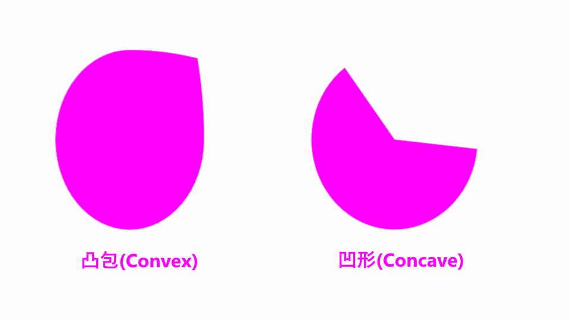
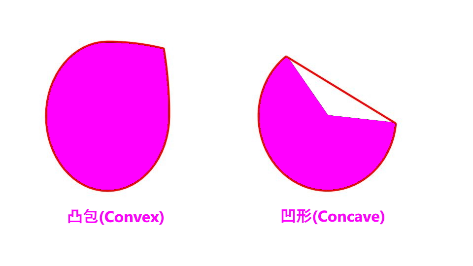
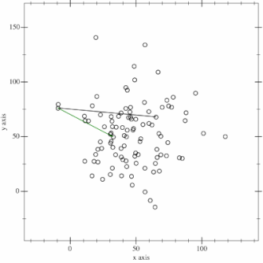
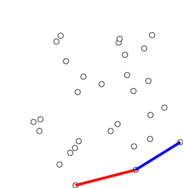
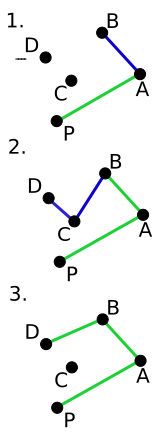
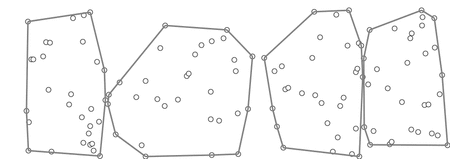
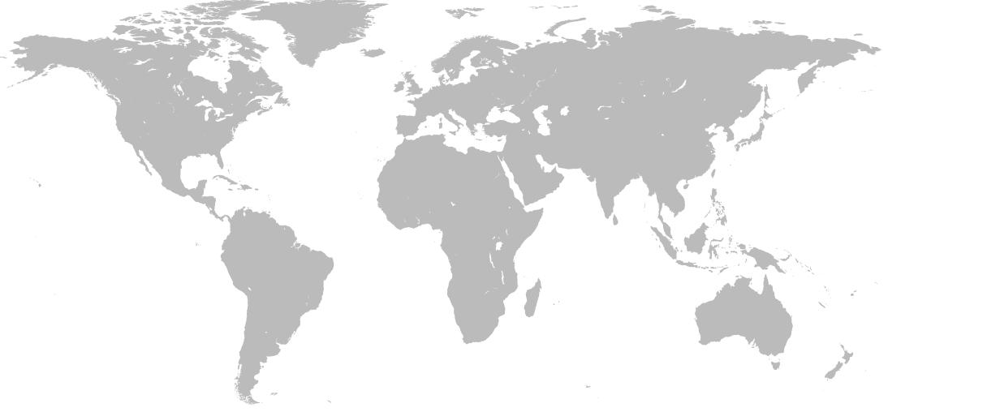
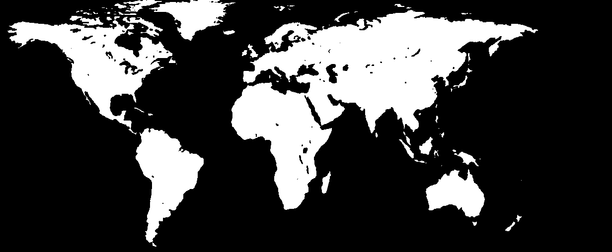
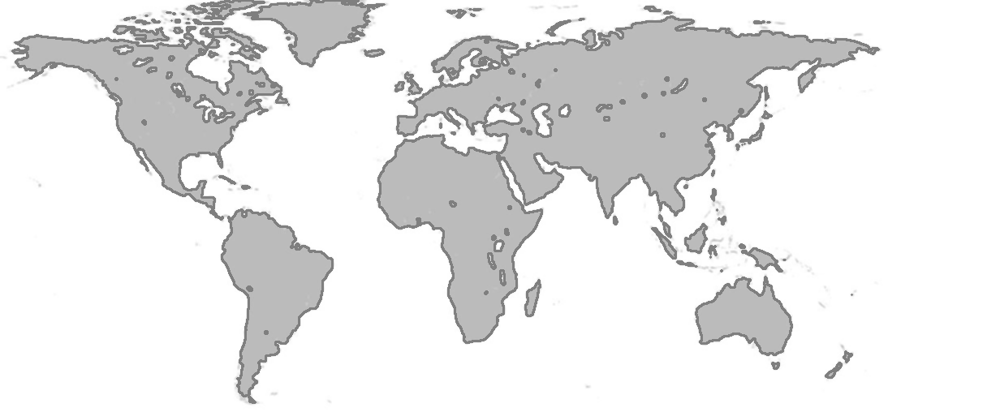
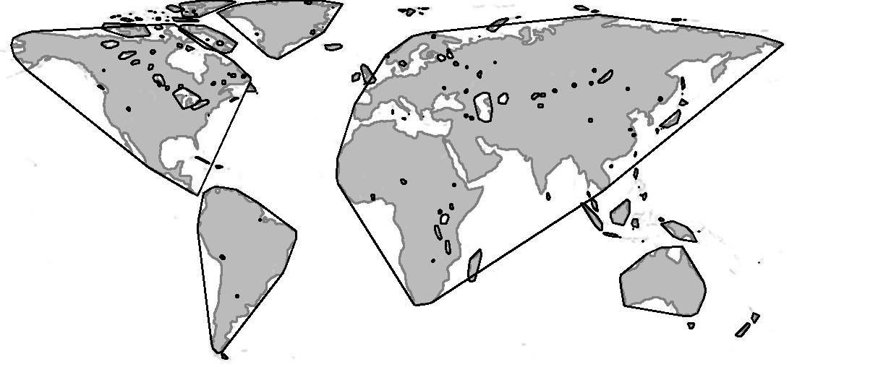

凸包外观(Convex Hull)
什么是Convex Hull？
Convex —— 形容形状所有内角不得大于180度。非凸包形状称为非凸形或凹形(Concave)。图中显示了凸形和非凸形的示例：Hull —— 物体的外观或形状。
因此，形状或一组点的Convex Hull是围绕这些点或形状的紧密拟合凸边界。
下图显示以上例子个别的凸包外观。

凸对象的凸包只是其边界。凹形的凸包是最紧密地包围它的凸形边界。
Gift Wrapping 算法
我想送你们一个礼物，但是挑选我很害怕选择礼物，如果这不是你想要的，请原谅我。无论如何，这里是点的随机分布，我们如何找到其凸包？查找凸包的算法通常称为Gift Wrapping(“礼品包装”)算法。下面讨论Gift Wrapping算法的一个发展。Jarvis March算法
[维奇百科]
伪代码
algorithm jarvis(S) is
// S 是输入的点列
// P 将是输出的凸包外观点列。最终长度为i.
pointOnHull = S 里最左边的点 // 包括为凸包的第一个点
i := 0
repeat
P[i] := pointOnHull
endpoint := S[0] // 凸包外观上候选边的初始终点
for j from 0 to |S| do
// endPoint==pointOnHull是一种罕见的情况，仅当j==1或循环尚未设置更好的端点时才可能发生
if (endpoint == pointOnHull) or (S[j] 在从P[i]到endpoint的直线的左边) then
endpoint := S[j] // 发现更大的左偏移，更新终点
i := i + 1
pointOnHull = endpoint
until endpoint = P[0] // 包裹到第一个外观点
时间复杂度
O(nh)
其中n是输入点数，h是凸包中的点数
葛立恒扫描法(Graham's scan)
[维奇百科]
伪代码
# 当ccw函数的值为正的时候，三个点为“左转”（counter-clockwise turn），如果是负的，则是“右转”的，而如果
# 为0，则三点共线，因为ccw函数计算了由p1,p2,p3三个点围成的三角形的有向面积
function ccw(p1, p2, p3):
return (p2.x - p1.x)*(p3.y - p1.y) - (p2.y - p1.y)*(p3.x - p1.x)
let points 为输入的点列
let stack = 空的堆栈，输出点列
find 最下方且最左边的点，称为 P0
sort points 根据与 P0 之间的极角，如果数个点有着同样的极角，则仅保存那个最远距离的点，其他都抛弃
for point in points:
# 如果顺时针旋转到达该点，则从堆栈中pop出最后一个点
while count stack > 1 and ccw(next_to_top(stack), top(stack), point) < 0:
pop stack
push point to stack
end

可见，PAB和ABC是逆时针的，但BCD不是。该算法会检测到这种情况，并丢弃先前选择的线段，直到逆时针旋转(在这种情况下为ABD)。
时间复杂度
O(n log n)
其中n是输入点数，h是凸包中的点数
Chan算法
[维奇百科]Chan算法是结合Graham和Jarvis算法的一个优化。在这里，我们将点分成较小的包(m个包)，并使用Graham扫描找到它们的凸包，然后从孔中取出顶点并将其插入Jarvis March算法。

Chan算法的2D演示。注意，该算法会任意划分点，而不一定是x坐标。
时间复杂度
O(n log h)
其中n是输入点数，h是凸包中的点数
我们上面认识了最初的一些Gift Warpping算法，可见复杂度并不是线性的(不是最快)。所以，O(n)算法可行吗？答案是肯定的，但是找到用于凸包的线性算法，那整个历史其实有点令人尴尬的。
Sklansky在1972年发布了第一个O(n)算法。之后却被证明它是错误的。在1972年至1989年之间，发布了16种不同的线性算法，后来发现其中7种是不正确的！
这让我想起了我在大学里听到的一个笑话：数学中的每个困难问题都有一个简单易懂的错误解决方案。
更尴尬的是OpenCV内convexHull使用的算法却是Sklansky(1982)的算法。这个算法在发布后的几个月后被证明是错误的。
无论如何，它仍然是一种流行的算法，并且在大多数情况下，它可以产生正确的结果。现在让我们看看如何使用它。
示例
我们拿以下图片为例：
预处理/二进制
我们先读取图像，imread函数，我们能直接使用IMREAD_GRAYSCALE选项，这样就不用再cvtColor至灰度图(Grayscale)了。之后我使用模糊来去图像杂质。再使用阈值来获取二进制图像。#include <opencv2/opencv.hpp>
#include <vector>
using namespace cv;
using namespace std;
int main() {
Mat img;
img = imread("sample.jpg", IMREAD_GRAYSCALE); // 读取灰度图
Mat blur_img, thresh;
blur(img, blur_img, Size(3, 3)); // 模糊
threshold(blur_img, thresh, 200, 255, THRESH_BINARY_INV); // 阈值
...

我们使用THRESH_BINARY_INV模式，因为前几章提到，“需检测的物体是白色，背景是黑色”原则
轮廓检测
有了二进制图像，就可以轮廓检测了。...
vector<vector<Point> > contours;
vector<Vec4i> hierarchy;
findContours(thresh, contours, hierarchy, RETR_TREE, CHAIN_APPROX_SIMPLE);
drawContours(img, contours, -1, Scalar(127), 2);
...

绘出的轮廓是灰色的
凸包外观
之后就能展示凸包功能：...
vector<vector<Point> >
hull(contours.size());
for(int i = 0; i < contours.size(); i++)
convexHull(contours[i], hull[i], false);
drawContours(img, hull, -1, Scalar(0), 2);
imshow("convex hull", img);
waitKey(0);
destroyAllWindows();
return 0;
}

结果